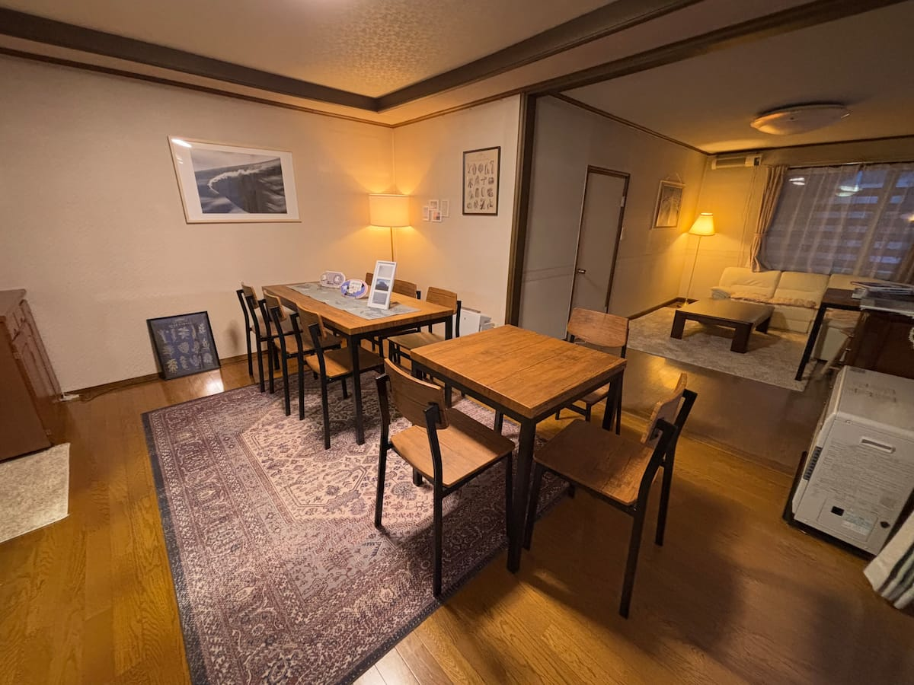
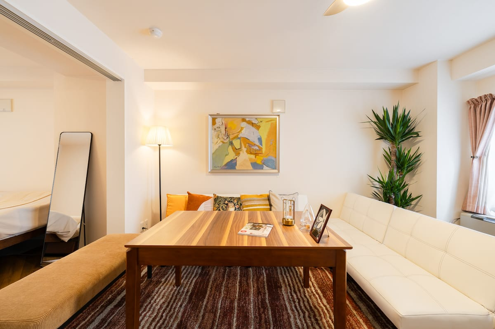

シマエナガニセコ
ニセコ・倶知安エリアで、雪山や自然を楽しむ滞在に。写真、設備、アクセス、周辺観光を確認できます。
Stay in Hokkaido
シマエナガニセコ、シマエナガ札幌の公式宿泊案内。写真、設備、アクセスを確認し、Beds24の予約導線へ進めます。
Beds24 Availability
このエリアはWordPress化時にBeds24公式プラグイン、埋め込みコード、または外部予約ページ導線へ差し替えます。
日付、人数、施設を選択する空室検索ウィジェットを設置する想定です。予約機能は自作しません。
Facilities
ニセコで自然を楽しむ滞在、札幌で街を拠点にする滞在。旅の目的に合わせて施設を選べます。

ニセコ・倶知安エリアで、雪山や自然を楽しむ滞在に。写真、設備、アクセス、周辺観光を確認できます。

札幌観光や長期滞在の拠点に。2LDK貸切の写真、設備、アクセス、周辺情報を確認できます。